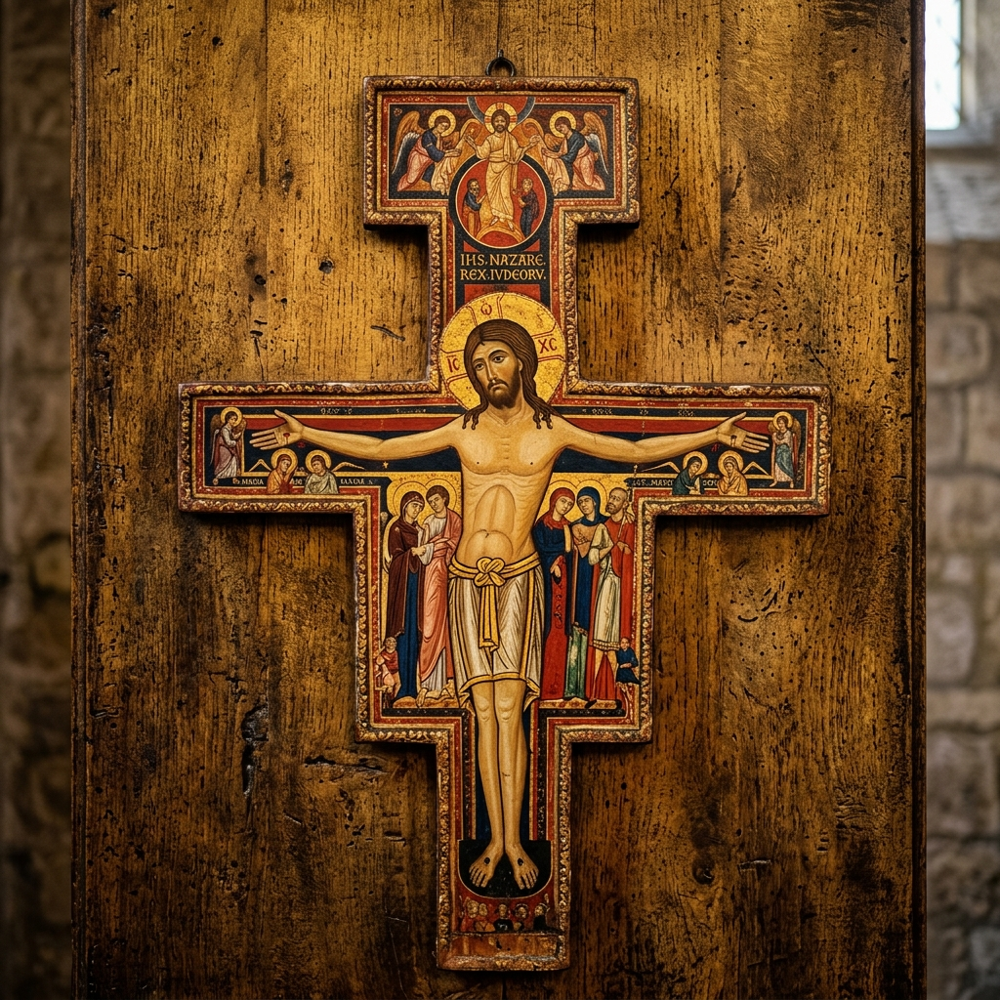

La Cruz de San Damián
El célebre icono que habló a San Francisco de Asís y se convirtió en la brújula y estandarte del carisma de reconstrucción de la Iglesia.
El Encuentro que Transformó la Historia
En el otoño de **1205**, un joven e inquieto Francisco de Asís, sumergido en una profunda crisis espiritual tras regresar de la guerra y la prisión, entró a orar en la pequeña y ruinosa iglesia de **San Damián**, ubicada en las afueras de los muros de Asís. Estando postrado ante un gran crucifijo pintado en madera, Francisco comenzó a suplicar luz al Señor de manera humilde y ferviente.
Fue en ese momento contemplativo cuando ocurrió el milagro. Los labios del Cristo del crucifijo se movieron y Francisco escuchó una voz dulce y solemne que le llamaba por su nombre: **"Francisco, ve y repara mi Iglesia, que, como ves, amenaza ruina"**. Sobrecogido de temor y gozo, Francisco asintió de inmediato. En sus inicios, interpretó el mandato de manera física, comenzando a mendigar piedras y reconstruyendo con sus propias manos las ruinas de San Damián, San Pedro y la Porciúncula. Más tarde, la gracia del Espíritu Santo le reveló la verdadera escala del llamado: restaurar la Iglesia espiritual de Cristo a través del retorno absoluto al amor evangélico, la pobreza radical y la humildad.
Iconografía: El Cristo Viviente y Triunfante
La Cruz de San Damián no es un simple crucifijo, sino un **icono teológico** de estilo románico con fuertes influencias bizantinas, pintado en el siglo XII por un artista anónimo (se cree que un monje sirio establecido en Umbría). A diferencia de las representaciones realistas y dolorosas de épocas posteriores, este crucifijo representa al **Cristo Viviente y Triunfante** (*Christus triumphans*):
- Los Ojos de Cristo: Se muestran completamente abiertos y serenos, mirando de frente a quien contempla el icono. Jesús no está vencido ni agonizante; está vivo, resucitado y reina en la cruz.
- La Postura: No cuelga inerte de los clavos, sino que aparece erguido, como si estuviera suspendido en el aire frente a un fondo dorado que representa la eternidad y la luz del Padre.
- Los Testigos: Debajo de los brazos extendidos de Cristo se encuentran las figuras de quienes estuvieron presentes en el Calvario: María (su madre), San Juan Apóstol, María Magdalena, María de Cleofás y el Centurión. Todos están rodeados por una aureola, compartiendo la comunión eclesial y de los santos.
- Los Ángeles e Inscripciones: En la parte superior, se representa a Cristo ascendiendo victorioso al cielo rodeado de ángeles alegres, y arriba se lee el título: IHS NAZAREN REX IUDEORUM (Jesús Nazareno, Rey de los Judíos).
En **1257**, cuando las Clarisas dejaron el convento de San Damián para trasladarse al interior de Asís, llevaron consigo esta preciada cruz. Hoy en día se custodia en una capilla lateral dentro de la **Basílica de Santa Clara** en Asís, donde miles de peregrinos la veneran a diario, mientras que una fiel réplica adorna el templo original de San Damián.

| Origen | Siglo XII (Bizantino-Románico) |
| Ubicación Original | Iglesia de San Damián, Asís |
| Ubicación Actual | Basílica de Santa Clara, Asís |
| Material | Madre de nogal enyesada y pintada |
| Dimensiones | 190 cm de alto x 120 cm de ancho |